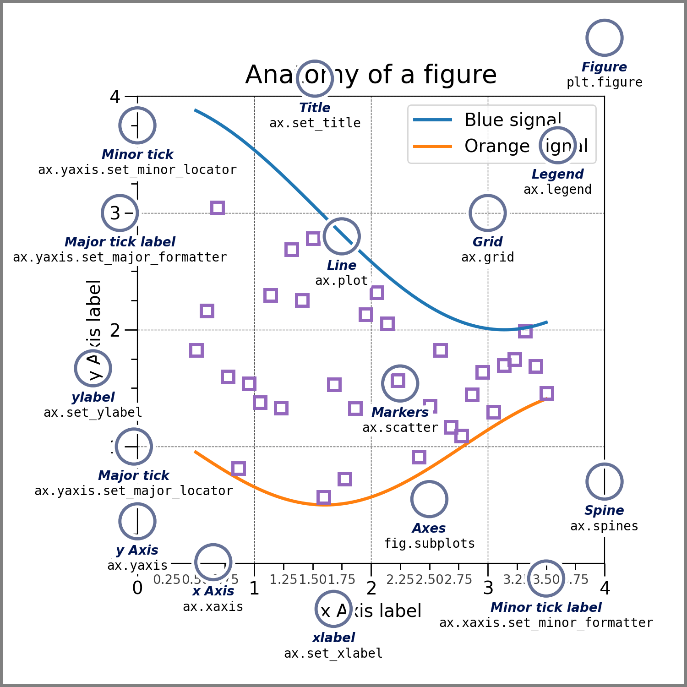
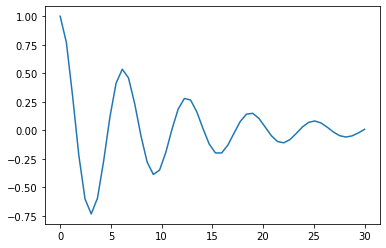
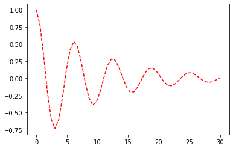

MATPLOTLIB
Matplotlib es una librería de Python que puede crear gráficos de alta calidad y altamente configurables en dos dimensiones. Funciona muy bien con pandas y numpy.
Importando Matplotlib
Primero debe importar Matplotlib. Cada vez que se abre el notebook, debes hacer esto.
Si no lo has instalado, primero debes ejecutar:
pip install matplotlib
plt:
# Declaracion permite que el grafico generado aparesca en el notebooks
%matplotlib inline
import matplotlib.pyplot as plt
Documentación Oficial Matplotlib
La documentación oficial Matplotlib la encontraras en https://matplotlib.org/
Mi Primer Gráfico
Se puede comenzar a trazar gráficas facilmente con Matplotlib , vea el siguiente código:
plt.plot([5,10,6,-10,15,1])
La línea anterior crea la gráfica que se muestra en la figura. La función plot solo recibe una lista de valores como argumento. El siguiente código produce un resultado más refinado:
plt.plot([0,1,2,3,4,5], [5,10,6,-10,15,1], 'r--o', label="Partícula 1")
plt.xlabel("Tiempo (s)")
plt.ylabel("Posición (m)")
plt.title("Una primera aproximación")
plt.text(2,7,"$ P_1 (2,6) $", color="b")
plt.legend()
plt.grid(ls="--", color="#dadada")
Se puede ver que se agregan elementos descriptivos como etiquetas, leyendas y anotaciones aquí. Estos elementos generalmente sirven para proporcionar una descripción completa de la información que se proporciona a través de las gráficas.
La siguiente figura de la documentación de matplotlib resume los elementos principales que podemos modificar

Función plot
El módulo pyplot contiene la función plot, que se utiliza principalmente para crear cualquier gráfica en dos dimensiones en coordenadas rectangulares.
La forma más básica de la función plot es pasarle un sólo argumento:
plt.plot([1,2,1,0,-1,1])
Al darle un solo argumento, se consideran los valores de la coordenada vertical y se asume que la coordenada horizontal oscila entre 0 y N-1, donde N es el número de elementos en la lista de valores introducidos.
El primer argumento contiene una lista X que indica los valores de coordenadas horizontales y el segundo una lista Y que indica los valores de coordenadas verticales:
plt.plot([10,25,30,60,70,100], [100,200,-100,300,0,-250])
Graficando funciones matemáticas
Podemos evaluar la siguiente función matemática:
En el intervalo 0 <= x <= 30
x = np.linspace(0, 30)
y = np.exp(-0.1*x)*np.cos(x)
plt.plot(x,y)

Modificando el color, estilos y grosor de línea
La función plot acepta argumentos adicionales para cambiar y controlar las características de la línea que se representa. Se puede pasar un tercer argumento, por ejemplo, que contenga una combinación de color y estilo de línea:

En https://matplotlib.org/api/markers_api.html se muestra una tabla con los símbolos (markers) disponibles para utilizar en la función plot. En https://matplotlib.org/api/colors_api.html puede consultar información respecto a los colores que puede abreviar mediante un sólo caracter.
Además de la forma anterior, también es posible especificar el color y estilo de línea utilizando keyword arguments:
x = np.linspace(0, 30)
y = np.exp(-0.1*x)*np.cos(x)
plt.plot(x, y, linestyle="--", color="r")

x = np.linspace(0, 30, 80)
y = np.exp(-0.1*x)*np.sin(x)
plt.plot(x, y, linestyle="-", color="coral", marker="*")
El grosor de línea se puede controlar mediante el keyword argument linewidth:
plt.plot(x, y, linestyle="-", color="coral", marker="*", linewidth=3)
Título de gráfica, etiquetas de ejes y nombres de curvas
Debido a su naturaleza, las gráficas se utilizan para presentar y/o visualizar datos específicos, para lo que se requiere una descripción detallada de lo que se muestra. Es muy común que los ejes horizontal y vertical incluyan etiquetas y nombres de gráfica. Además, si se están dibujando más de una curva, es necesario explicar a qué se refiere cada una.
x = np.linspace(0, 30, 500)
y1 = np.exp(-0.1*x)*np.cos(x)
y2 = np.exp(-0.2*x)*np.sin(x)
plt.plot(x, y1, "b-", label="Partícula 1")
plt.plot(x, y2, "r-", label="Partícula 2")
plt.xlabel("Tiempo (s)")
plt.ylabel("Posición (mm)")
plt.title("Gráfica de posición")
plt.legend()

La instrucción xlabel coloca una etiqueta al eje horizontal, de manera similar ylabel lo hace para el eje vertical. Con title adicionamos un título a la gráfica. La instrucción legend sirve para colocar el recuadro con el nombre asignado a cada curva mediante el keyword argument label.